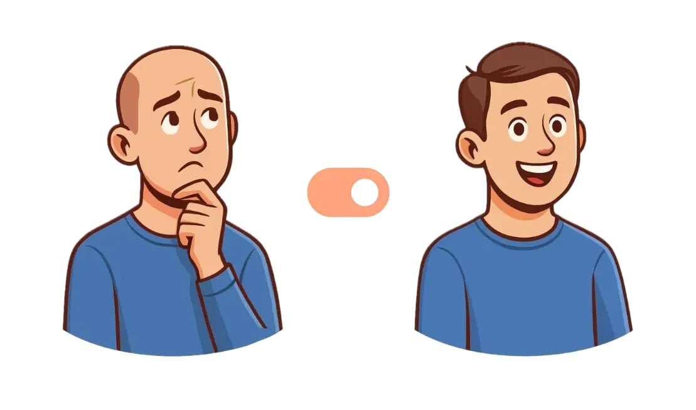
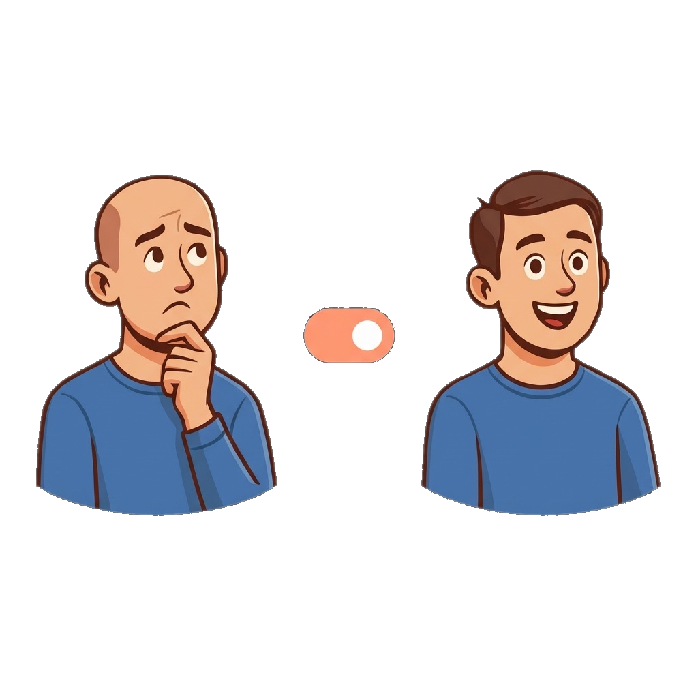

Your Path to Confident Hair Restoration
The Grafto mobile app explains hair transplantation and tricopigmentation step by step—what happens before and after, how to do it right, how many grafts are needed, and how much it will actually cost.


Hair Restoration Articles
Статьи о восстановлении волос
In-depth guides on every major procedure and what to expect.
FUE Hair Transplant: Complete Guide
Пересадка волос методом FUE: полное руководство
Follicular Unit Extraction — a minimally invasive technique for natural-looking results with faster recovery.
Preparing for Your Hair Transplant
Подготовка к пересадке волос
A complete timeline of what to do 2 weeks, 1 week, and the day before your procedure for the best results.
Scalp Micropigmentation (SMP)
Скальповая микропигментация (SMP)
A non-surgical solution that creates the appearance of natural hair follicles for all stages of hair loss.
Hair Transplant Cost: Turkey, Russia, EU, USA
Стоимость пересадки волос: Турция, Россия, ЕС, США
Real 2026 prices across major destinations — what's included, hidden fees, and how to compare quotes.
Hair Transplant for Men and Women: Key Differences
Пересадка волос для мужчины и женщины: в чем различие?
Patterns of hair loss, candidacy, technique choice, and expected outcomes — how male and female cases differ.
How to Choose a Hair Transplant Clinic
Как выбрать клинику по пересадке волос
Credentials, team qualifications, portfolio, safety standards — what really matters beyond the price.
FUT Hair Transplant: The Strip Method
Пересадка волос методом FUT: стрип-метод
Follicular Unit Transplantation — the proven strip technique for maximum graft yield in a single session.
DHI Hair Transplant: Direct Implantation
Пересадка волос методом DHI: прямая имплантация
Direct Hair Implantation — refined FUE with the Choi pen for precision hairline work and higher density.
Understanding the Norwood Scale
Шкала Норвуда: понимание стадий
The standard classification system for male pattern baldness — stages, self-assessment, and treatment mapping.
Swelling After a Hair Transplant
Отёк после пересадки волос
Why it appears, how long it lasts, and what actually helps reduce it day by day.
Minoxidil: What It Is and How It Works
Миноксидил: что это и как он работает
A science-based overview of topical and low-dose oral minoxidil — mechanism, evidence, and who it is for.
Realistic Expectations from a Hair Transplant
Реалистичные ожидания от пересадки волос
What a transplant can and cannot do — a short, honest guide to outcomes, timelines, and limits.
FUE Hair Transplant: Complete Guide
What Is FUE?
Follicular Unit Extraction (FUE) is a minimally invasive hair transplant technique where individual follicular units — each containing one to four hairs — are extracted directly from the donor area using a micro-punch tool, typically 0.6 to 1.0 millimeters in diameter. Unlike the older strip method (FUT), FUE does not require a linear incision, which means no visible linear scar in the donor zone. This makes it the preferred choice for patients who want to wear their hair short after the procedure.
The technique was first described in the early 2000s and has since become the most widely performed hair transplant method worldwide. Advances in punch design, motorized extraction devices, and robotic-assisted systems have significantly improved graft survival rates and reduced procedure times.
How FUE Works: Step by Step
The procedure begins with the surgeon mapping the donor area, typically the back and sides of the scalp where hair is genetically resistant to DHT (dihydrotestosterone). The donor area is trimmed short to allow precise extraction. Under local anesthesia, the surgeon uses a small circular punch to isolate each follicular unit from the surrounding tissue. The punch scores around the follicle, and the graft is gently lifted using fine forceps.
Once enough grafts are harvested — typically 1,500 to 4,000 per session — the surgeon creates tiny recipient sites in the balding or thinning areas using micro-blades or needles. The angle, depth, and direction of each site are carefully planned to mimic natural hair growth patterns. Extracted grafts are then placed into these recipient sites one by one. The entire procedure takes 4 to 8 hours depending on the number of grafts.
Recovery Timeline
Days 1-3: Mild swelling and redness are normal. Small crusts form around each graft site. Sleep with your head elevated at a 45-degree angle. Avoid touching the transplanted area. Use prescribed saline spray every 30-45 minutes to keep grafts moist.
Days 4-7: Swelling typically peaks around day 3-4 and then subsides. You may notice slight bruising around the forehead. Begin gentle hair washing as directed by your surgeon, usually on day 3-5. Most patients return to desk work by day 5-7.
Weeks 2-4: Crusts fall off naturally during washing. Around weeks 2-3, transplanted hairs enter "shock loss" — they shed temporarily. This is completely normal and expected. The follicles remain alive beneath the surface.
Months 3-6: New hair growth begins, initially thin and wispy. By month 4-5, you'll notice visible improvement. Months 6-12: Significant growth. Hair thickens and matures. Full results are typically visible at 12-18 months post-procedure.
Who Is a Good Candidate?
FUE works best for patients at Norwood stages 2 through 5 with adequate donor hair density (typically above 65 follicular units per square centimeter). Ideal candidates are in good general health, have realistic expectations, and understand that the procedure redistributes existing hair rather than creating new follicles. Patients with very fine or curly hair may see slightly different extraction dynamics. Those with extensive hair loss (Norwood 6-7) may not have sufficient donor supply for satisfactory coverage with FUE alone.
Pros and Cons
Advantages include no linear scar, faster recovery than FUT, less post-operative discomfort, and the ability to wear hair very short. Grafts can also be harvested from body areas (beard, chest) in some cases. Disadvantages include potentially lower graft yield per session compared to FUT, the need to shave the donor area, and slightly higher cost. The procedure is also highly dependent on the surgeon's skill — transection rates (damaged grafts during extraction) vary significantly between practitioners.
Expected Results
With a skilled surgeon, FUE achieves graft survival rates of 85-95%. Natural-looking results depend on proper recipient site creation — hairline design, graft angle, and density distribution are crucial. Most patients report high satisfaction rates. The transplanted hair is permanent because it comes from DHT-resistant donor areas. However, native hair in non-transplanted areas may continue to thin, so some patients opt for medical maintenance (finasteride, minoxidil) to preserve existing hair. Cost ranges from $4,000 to $15,000 depending on geographic location, surgeon experience, and the number of grafts needed.
More information on hair transplantation and tricopigmentation is available in the Grafto mobile app.
Open Grafto in the App Store →FUT Hair Transplant: The Strip Method
What Is FUT?
Follicular Unit Transplantation (FUT), commonly known as the strip method, involves surgically removing a narrow strip of scalp tissue from the donor area — typically the back of the head where hair is most resistant to hormonal thinning. This strip is then carefully dissected under high-powered stereomicroscopes by a team of trained technicians, separating it into individual follicular units containing one to four hairs each.
FUT was the gold standard for hair transplantation for decades and remains a powerful technique, particularly when a large number of grafts is needed in a single session. While FUE has gained popularity due to its "scarless" appeal, FUT continues to be the preferred choice in many clinical scenarios where maximizing graft yield is the priority.
The Strip Method Explained
The surgeon first designs and marks the donor strip area, typically 1-1.5 cm wide and 15-30 cm long, depending on scalp laxity and the number of grafts required. Under local anesthesia, the strip is excised with a scalpel, and the wound edges are closed with sutures or staples using a trichophytic closure technique that allows hair to grow through the scar line, making it less visible.
The excised strip is immediately placed under microscopes where technicians separate individual follicular units with precision. This controlled environment minimizes graft damage and allows for careful quality assessment. Each follicular unit is kept in a chilled holding solution to maintain viability. Meanwhile, the surgeon creates recipient sites in the balding areas, and the grafts are placed according to the predetermined plan for density, direction, and natural appearance.
Recovery
Recovery from FUT is slightly longer than FUE due to the donor site closure. Sutures or staples are typically removed 10-14 days after surgery. Most patients experience tightness and mild discomfort at the donor site for the first week, manageable with prescribed pain medication. Swelling may occur, particularly around the forehead, peaking at days 3-5.
Physical activity should be limited for 2-3 weeks. Light exercise can resume at week 3, and full activity by week 4-6. The donor scar matures over 6-12 months, becoming a thin white line that is easily concealed by hair even at moderate lengths. The recipient area follows the same recovery timeline as FUE — crusts fall off within 7-14 days, shock loss occurs at weeks 2-4, and new growth begins at months 3-4.
Comparing FUT vs FUE
FUT typically yields more grafts per session (4,000-6,000 vs 2,000-4,000 for FUE), making it more efficient for extensive hair loss. Graft survival rates are often slightly higher with FUT because microscopic dissection minimizes follicle damage. FUT also preserves the donor area better for future procedures since it doesn't deplete individual follicles from across the donor zone. The main trade-off is the linear scar, which is visible if the hair is cut very short (below #3 guard).
Who Benefits Most
FUT is ideal for patients at Norwood stages 4-7 who need maximum coverage, those planning multiple procedures over time, patients comfortable with maintaining hair length sufficient to cover the donor scar, and individuals seeking the most cost-effective option for high graft counts. It's also a good choice for patients with tight scalps who may not be ideal FUE candidates.
Results Timeline
Like FUE, final results from FUT appear at 12-18 months. The advantage is that more grafts typically mean denser coverage achievable in a single sitting. Cost ranges from $4,000 to $12,000 depending on graft count and location, generally 10-20% less expensive per graft than FUE.
More information on hair transplantation and tricopigmentation is available in the Grafto mobile app.
Open Grafto in the App Store →DHI Hair Transplant: Direct Implantation
What Makes DHI Different
Direct Hair Implantation (DHI) is an advanced refinement of the FUE technique that uses a specialized tool called a Choi implanter pen. While FUE requires two separate steps — creating recipient channels and then placing grafts — DHI combines both into a single motion. The Choi pen is a hollow, pen-like device with a fine needle at the tip that simultaneously creates the recipient site and inserts the graft in one action.
This key difference gives DHI surgeons unprecedented control over three critical variables: the depth of implantation, the direction of hair growth, and the angle at which each follicle sits in the scalp. This precision makes DHI particularly effective for hairline design, where even small variations in angle and direction can make the difference between natural and artificial-looking results.
The Choi Pen Technique
The Choi implanter pen was developed in South Korea and is a patented device resembling a thick ballpoint pen with a hollow needle at the tip (0.5-1.0mm diameter). After extraction (using the standard FUE micro-punch method), each follicular unit is loaded into the Choi pen by an assistant. The surgeon then positions the pen at the desired angle and depth and depresses the plunger, which simultaneously pierces the skin and deposits the graft.
A skilled DHI team typically uses 6-8 Choi pens in rotation — while the surgeon implants with one pen, assistants load the others. This assembly-line approach maintains efficiency despite the technique being inherently slower per graft than standard FUE. Most DHI sessions handle 1,000 to 3,000 grafts, with larger sessions requiring experienced teams and sometimes extending across two days.
DHI vs FUE
Both methods extract grafts the same way — the difference lies entirely in how they're implanted. FUE creates recipient channels first (using pre-made slits), then places grafts afterward. DHI implants directly. This means DHI grafts spend less time outside the body, which can improve survival rates. DHI also allows implantation without shaving the recipient area (known as "unshaven DHI"), which is a significant advantage for patients who want to keep their procedure discreet.
However, DHI is more time-intensive, requires specialized training, and costs 20-30% more than standard FUE. It's also limited in the number of grafts that can be placed in a single session compared to FUE or FUT.
Ideal Candidates
DHI is best suited for patients requiring hairline refinement and frontal restoration (Norwood 2-3), those wanting to avoid shaving the recipient area, patients seeking maximum density in specific zones, and individuals who prioritize the most natural-looking hairline possible. It's less ideal for patients needing large-area coverage (Norwood 5-7) where the slower placement speed becomes a limiting factor.
Recovery and Aftercare
Recovery from DHI mirrors FUE closely. The smaller implantation sites may lead to slightly faster healing, with less visible redness and crusting. Most patients return to social activities within 5-7 days. Aftercare includes gentle washing from day 3-5, avoiding sun exposure, sleeping elevated, and refraining from strenuous activity for 2 weeks. Shock loss occurs at weeks 2-4, and final results appear at 12-18 months.
Cost Considerations
DHI typically costs $5,000 to $18,000, reflecting the specialized equipment, longer procedure time, and advanced training required. Per-graft costs are higher than FUE ($3-8 per graft for DHI vs $2-5 for FUE). Patients should weigh the precision benefits against the cost premium and discuss with their surgeon whether DHI's advantages are clinically meaningful for their specific pattern of hair loss.
More information on hair transplantation and tricopigmentation is available in the Grafto mobile app.
Open Grafto in the App Store →Scalp Micropigmentation (SMP)
What Is SMP?
Scalp Micropigmentation (SMP) is a non-surgical cosmetic procedure that uses specialized micro-needles to deposit pigment dots into the upper dermis layer of the scalp. Each dot replicates the appearance of a real hair follicle, creating the illusion of a fuller head of hair or a clean-shaven buzz-cut look. Unlike tattoos, SMP uses smaller needles, shallower depth, and specialized pigments designed for the scalp environment.
SMP has become increasingly popular as both a standalone solution and a complement to hair transplant surgery. It's effective for concealing scars (including FUT linear scars and FUE punch marks), adding the illusion of density to thinning areas, creating a defined hairline, and providing a complete buzz-cut simulation for those with extensive hair loss.
How SMP Works
The practitioner uses a digital tattoo-like device with micro-needles (typically 1-3 needle configurations) to deposit organic, hypoallergenic pigment into the scalp at a depth of 0.5-2mm — shallower than traditional tattoos. The pigment is color-matched to the patient's natural hair color and skin tone. Dots are placed in varying densities to create a natural gradient that mimics real hair growth patterns.
The procedure requires 2-4 sessions spaced 1-2 weeks apart. The first session establishes the base layer with lighter shading. The second session adds density and darkens areas where needed. Additional sessions fine-tune the result. Each session lasts 2-5 hours depending on the treatment area. Topical numbing cream is applied before and during the procedure to minimize discomfort.
SMP vs Hair Transplant
SMP creates the appearance of hair follicles but does not produce actual hair growth. It's a cosmetic illusion rather than a medical procedure. Key differences: SMP requires no surgery, no donor area, no scarring, no downtime, and works for all Norwood stages regardless of donor supply. However, it doesn't provide the tactile sensation of real hair and requires periodic touch-ups every 4-6 years. Many patients choose to combine SMP with a hair transplant — using SMP to add visual density between transplanted hairs or to conceal donor area scars.
Who Is SMP For?
SMP suits a wide range of patients: those with early thinning who want to add visual density, individuals with extensive hair loss (Norwood 6-7) who lack sufficient donor hair for transplant, anyone wanting to camouflage scars from previous surgeries, people with alopecia areata or other conditions causing patchy hair loss, and those who simply prefer the clean-shaven look but want a defined hairline.
Session Process
Before the first session, a thorough consultation determines the desired hairline shape, density level, and pigment shade. Photos are taken for reference. During the procedure, the practitioner works section by section, building up layers of pigment dots. The scalp may appear slightly red and darker immediately after the session — this settles within 3-5 days. Patients should avoid washing the scalp, swimming, heavy sweating, and sun exposure for 3-5 days post-session.
Longevity and Maintenance
SMP results last 4-6 years before gradually fading. Touch-up sessions every 3-5 years maintain the appearance. Fading is gradual and uniform, so there's no abrupt change. Sun exposure accelerates fading, so SPF protection on the scalp is recommended. Cost ranges from $1,500 to $4,000 for full scalp treatment, making it one of the most affordable hair restoration options available.
More information on hair transplantation and tricopigmentation is available in the Grafto mobile app.
Open Grafto in the App Store →Understanding the Norwood Scale
What Is the Norwood Scale?
The Norwood Scale, formally known as the Hamilton-Norwood Scale, is the standard classification system used worldwide to measure the extent and pattern of male androgenetic alopecia (male pattern baldness). Developed by Dr. James Hamilton in the 1950s and later revised by Dr. O'Tar Norwood in the 1970s, it categorizes hair loss into seven distinct stages, allowing clinicians to assess severity, plan treatment, and communicate effectively with patients about their condition.
Understanding your Norwood stage is the essential first step in any hair restoration journey. It determines which procedures are suitable, how many grafts may be needed, and what results can be realistically expected. Most hair transplant consultations begin with a Norwood assessment.
Stages 1 Through 7
Stage 1: No significant hair loss or recession of the hairline. This is the baseline against which all other stages are measured. The hairline sits at or near the juvenile position along the upper brow crease.
Stage 2: Slight recession at the temples, creating a more mature hairline. This is extremely common and considered a normal adult male hairline pattern. Many men remain at Stage 2 their entire lives. Hair loss is minimal — approximately 0.5-1 cm of recession at the temporal peaks.
Stage 3: Deeper recession at the temples, forming a noticeable M-shape or U-shape. This is typically the earliest stage at which hair loss becomes cosmetically concerning. A variant — Stage 3 Vertex — indicates thinning primarily at the crown (vertex) with minimal frontal recession.
Stage 4: Significant recession at the front and substantial thinning at the crown. A band of moderately dense hair still separates the frontal and vertex areas. This stage often represents a tipping point where patients begin seriously considering surgical options.
Stage 5: The band of hair between the frontal recession and crown thinning becomes narrower and thinner. The overall balding area increases significantly. The remaining hair on top is sparse and fine.
Stage 6: The frontal and crown balding areas have merged into one large region. Only a thin fringe of hair may remain between the two zones. Hair remains primarily around the sides and back of the head in a horseshoe pattern.
Stage 7: The most extensive pattern of hair loss. Only a narrow band of hair remains around the sides and back of the head. The remaining hair may also be fine and thin. This represents the terminal stage of male pattern baldness.
How to Self-Assess
To assess your own Norwood stage, examine your hairline in a well-lit mirror. Check the temporal regions for recession, look at the crown from above (use a second mirror or phone camera), and compare against reference images. Consider the overall density and thickness of remaining hair. Keep in mind that hair loss is progressive — your current stage may advance over time, which affects long-term treatment planning.
Treatment Options by Stage
Stages 1-2: Medical management with finasteride and/or minoxidil is usually sufficient. Low-level laser therapy (LLLT) and PRP may provide supplementary benefit. Transplant is rarely needed or recommended.
Stage 3: FUE or DHI for hairline restoration works well. Medical therapy should continue to preserve existing hair. Typical graft count: 1,000-2,000.
Stages 4-5: FUE or FUT for broader coverage. FUT may be preferred for higher graft yields (2,500-4,000 grafts). SMP can complement transplant for added visual density.
Stages 6-7: Maximum donor harvesting with FUT, potentially combined with FUE from beard or body hair. SMP is an excellent standalone or complementary option. Realistic expectations are critical — full coverage is difficult to achieve. Typical graft count: 3,000-6,000+.
Graft Estimates by Stage
These are general estimates for achieving natural-looking coverage: Stage 2: 500-1,500 grafts. Stage 3: 1,000-2,000 grafts. Stage 4: 1,500-3,000 grafts. Stage 5: 2,500-4,000 grafts. Stage 6: 3,000-5,000 grafts. Stage 7: 4,000-6,000+ grafts. Actual numbers depend on donor density, hair caliber, desired density, and head size. A skilled surgeon will provide a precise estimate during consultation.
More information on hair transplantation and tricopigmentation is available in the Grafto mobile app.
Open Grafto in the App Store →Preparing for Your Hair Transplant
Two Weeks Before
Preparation begins two weeks before your surgery date. Stop smoking immediately — smoking constricts blood vessels and reduces blood flow to the scalp by up to 30%, significantly impairing graft survival and wound healing. If you take blood-thinning medications, consult your prescribing doctor about temporarily discontinuing them. Supplements that affect blood clotting should also be stopped: vitamin E, fish oil (omega-3), aspirin, ibuprofen, and any herbal supplements like ginkgo biloba, garlic extract, or St. John's Wort.
Schedule any necessary blood work your surgeon has requested. Common pre-operative tests include a complete blood count, coagulation panel, and sometimes infectious disease screening. Begin eating a nutrient-rich diet high in protein, iron, zinc, and biotin to optimize your body's healing capacity.
One Week Before
Stop consuming alcohol at least 7 days before surgery. Alcohol acts as a blood thinner and dehydrator, both of which compromise surgical outcomes. Studies have shown that alcohol consumption within a week of surgery can double the rate of graft loss. Reduce caffeine intake to minimize blood pressure fluctuations during the procedure.
Avoid any hair treatments: no coloring, chemical treatments, or heat styling. If you use minoxidil, your surgeon may advise stopping it 3-7 days before surgery to reduce scalp bleeding during extraction. Continue finasteride unless told otherwise. Arrange time off work — most patients need 3-5 days for recovery, though some return to remote work within 2-3 days.
The Night Before
Wash your hair thoroughly with your regular shampoo — a clean scalp reduces infection risk. Do not apply any styling products, conditioners, or leave-in treatments after washing. Get a full night's sleep (7-8 hours minimum). Avoid alcohol and heavy meals. Prepare the clothes you'll wear — choose a button-down shirt or zip-up hoodie that doesn't need to go over your head. Lay out any medications your surgeon has prescribed for the morning of surgery.
Day of Surgery
Eat a healthy, satisfying breakfast — the procedure lasts several hours and you'll need sustained energy. Protein and complex carbohydrates are ideal. Avoid heavy, greasy foods that might cause stomach discomfort. Take any prescribed pre-operative medications as directed (some surgeons prescribe anti-anxiety medication or antibiotics to begin the morning of surgery).
Wear a comfortable button-down shirt — nothing that pulls over the head. After surgery, your scalp will be sensitive and you'll need to dress without disturbing the grafts. Arrange reliable transportation home; do not plan to drive yourself. The local anesthesia and any sedation will impair your ability to drive safely.
What to Bring
Pack entertainment for the procedure: headphones, a podcast playlist, audiobooks, or music. Most clinics allow entertainment during the procedure since you'll be awake. Bring a neck travel pillow for the ride home — you'll want to keep your head upright and supported. Pack prescribed medications, a phone charger, comfortable slip-on shoes, and sunglasses to protect your eyes from light sensitivity after the procedure. A loose hat may be useful for the drive home, but confirm with your clinic whether you can wear one immediately post-op.
Setting Realistic Expectations
Understand that full results take 12-18 months. At weeks 2-4, transplanted hairs will shed (shock loss) — this is normal and does not mean the procedure failed. The follicles remain alive and will begin producing new hair at months 3-4. Growth is gradual and uneven at first. Months 6-9 bring the most noticeable improvement. Be patient with the process — hair transplantation is a marathon, not a sprint. Discuss a long-term plan with your surgeon, including medical maintenance to preserve non-transplanted hair.
More information on hair transplantation and tricopigmentation is available in the Grafto mobile app.
Open Grafto in the App Store →Hair Transplant Cost: Turkey, Russia, EU, USA
Why Prices Vary So Much
Hair transplant pricing is driven by labour cost, clinic overhead, surgeon experience, technology used, and local competition. The same 3 000-graft FUE can cost $2 500 in Istanbul and $30 000 in Manhattan — and both can produce excellent (or poor) results depending on the team. Price alone is never a reliable quality signal.
Most clinics charge in one of three ways: a flat package per session, per graft, or per Norwood zone. Flat packages are common in Turkey, per-graft pricing dominates in the US and Western Europe, and Russian clinics mix both models. Always request a written quote that lists anesthesia, medications, post-op kit, follow-ups, transport, and hotel.
Turkey
Istanbul is the world's hair-transplant capital, performing roughly 60% of global procedures. Typical all-inclusive packages for 3 000–4 500 grafts range from $1 800 to $4 500 and usually include hotel, airport transfer, translator, medications, and a PRP session. Premium clinics with board-certified surgeons performing the full procedure personally charge $4 500–$8 000. Extremely cheap "$1 000" offers are almost always technician-run with the surgeon only marking the hairline — proceed with caution.
Russia
Moscow and Saint Petersburg offer strong clinical standards at prices between those of Turkey and Europe. Pricing models vary by clinic: some use a fixed package per session, others charge per graft. Fixed packages start from about $1 800 per session regardless of graft count, which often makes them the most predictable option for larger cases. Per-graft pricing typically runs 180–350 ₽ per graft (about $2–$4), so a 3 000-graft session on that model is roughly 540 000–1 050 000 ₽ ($6 000–$11 500). DHI adds 20–30%. SMP sessions start from 25 000 ₽. Prices include local anesthesia, medications, and follow-ups; travel is usually separate.
European Union
Spain, Germany, Poland, and the Baltics are the main EU destinations. Spanish and German clinics charge €4–€7 per graft, with 3 000-graft sessions landing at €12 000–€20 000. Poland, Hungary, and the Baltics are 30–40% cheaper — €3–€4 per graft — while maintaining strong regulatory oversight. EU pricing always includes VAT, emergency coverage, and long-term follow-up; these are legally required.
USA
The United States is the most expensive market. FUE pricing runs $5–$12 per graft, producing 3 000-graft totals of $15 000–$36 000. Robotic FUE (ARTAS) and DHI add 20–40%. Top-tier surgeons in New York, Los Angeles, and Miami charge up to $18 per graft. The tradeoff is the strictest regulatory environment in the world, full malpractice coverage, and direct surgeon involvement in every case.
What the Quote Should Include
A transparent quote should list: consultation and design, blood work, local anesthesia, all surgical steps, post-op medications, follow-up visits for 12 months, and written graft survival guarantees (most reputable clinics guarantee 85–95%). Beware of packages that exclude medications, quote per "hair" instead of per graft, or require additional fees for hairline design.
Total Cost of Ownership
Beyond the procedure, budget for travel ($300–$2 000), medications ($100–$300), any missed work (1–2 weeks for physical jobs), and long-term maintenance: finasteride ($15–$60/month) and minoxidil ($20–$40/month) to protect non-transplanted hair. A second session is needed in 20–30% of cases within 5 years.
More information on hair transplantation and tricopigmentation is available in the Grafto mobile app.
Open Grafto in the App Store →Hair Transplant for Men and Women: Key Differences
Different Patterns, Different Strategies
Male and female hair loss are driven by the same hormonal pathway — dihydrotestosterone (DHT) acting on genetically susceptible follicles — but they express very differently. Men typically show bi-temporal recession and crown thinning (Norwood scale). Women more often display diffuse thinning over the entire top of the scalp while keeping the frontal hairline intact (Ludwig scale). These pattern differences shape every step of the transplant plan.
Donor Area Reality
In men, the donor area at the back and sides of the head is usually DHT-resistant and stable for life. In women, diffuse thinning frequently affects the donor zone itself, reducing the supply of permanent follicles and limiting how many grafts can safely be harvested. Pre-operative miniaturization studies (trichoscopy) are essential for every female candidate.
Technique Selection
Men rarely have concerns about shaving the donor area, so classic FUE or FUT is straightforward. For women, shaving is often unacceptable, which makes unshaven FUE or DHI the preferred routes. DHI in particular allows implantation into existing thin hair without trimming the recipient area, which is critical for social recovery.
Hairline Design
Male hairline design creates a slightly receded, irregular edge that ages well. The female hairline is rounded, lower, and denser along the front, with soft "peach fuzz" transitional hairs. Designing a female hairline requires detailed planning of micro-grafts (1-hair units) along the first 2–3 mm.
Candidate Evaluation
Only 2–5% of women seeking hair restoration are suitable surgical candidates on first consultation. Female pattern loss is often caused by or aggravated by iron deficiency, thyroid disease, PCOS, or telogen effluvium — all of which must be treated before any transplant is considered. Men usually require only DHT-related screening.
Expected Outcomes
Men typically reach 85–95% graft survival and visible density at 12 months. Women often need two sessions spaced 12–18 months apart to achieve similar density because of lower graft counts per session and the diffuse nature of the loss. Continued medical therapy (minoxidil, spironolactone for women; finasteride for men) is required to preserve results.
Non-Surgical Options
Because many women are not surgical candidates, alternatives gain importance: topical and oral minoxidil, low-level laser therapy, PRP, microneedling, and scalp micropigmentation to add visual density. For men, SMP is frequently combined with FUE to reinforce crown density or disguise scars.
More information on hair transplantation and tricopigmentation is available in the Grafto mobile app.
Open Grafto in the App Store →How to Choose a Hair Transplant Clinic
Start With the Surgeon, Not the Clinic Brand
A clinic is only as good as the surgeon who performs — or supervises — your operation. Request the full name and medical license number of the operating physician, then verify it with the national medical board. Board certification in dermatology, plastic surgery, or ISHRS (International Society of Hair Restoration Surgery) membership is a meaningful baseline.
Ask how many grafts the surgeon personally places versus how many are delegated to technicians. In Turkey it is common for the surgeon to mark the hairline and then leave — all extraction and implantation is done by trained technicians. This is legal and can produce good results, but the patient must know it upfront.
Look at Real Before/After Portfolios
Ask to see before/after photos from patients with similar Norwood or Ludwig patterns and similar hair texture to yours. Request photos taken under identical lighting at 3, 6, 9, and 12 months. Stock photos, heavily edited images, or results only "one month post-op" are red flags — real growth takes 9–12 months to judge.
Verify the Facility
The operating room should be a dedicated surgical suite, not a converted consultation room. Look for: sterile field protocols, a certified anesthetist or physician administering local anesthesia, emergency equipment (defibrillator, oxygen), accreditation by national health authorities, and a nursing team present throughout the procedure.
Technique and Technology Match
The clinic should recommend FUE, FUT, DHI, or a combination based on your donor area, scalp laxity, Norwood stage, and goals — not based on what equipment they own. Be wary of clinics that recommend the same technique to every patient. Modern clinics use micro-motor FUE punches (0.6–0.9 mm), stereomicroscopes for FUT strip dissection, and chilled holding solutions (HypoThermosol).
Transparent Pricing and Contract
Insist on a written contract detailing: total price, exact graft count promised, what happens if fewer grafts are achieved, medications included, follow-up schedule, and a guarantee on graft survival. A reputable clinic guarantees 80–95% survival and offers a free touch-up if results fall short.
Post-Op Support
Ask about follow-up cadence: most serious clinics check patients at 10 days, 1 month, 3, 6, and 12 months. Video follow-ups are acceptable for international patients. Avoid clinics that go silent after payment — the recovery period is when complications, if any, appear.
Red Flags
Hard-sell tactics on the first call, pressure to book within 24 hours, prices far below market, refusal to share the surgeon's name, "unlimited grafts" packages, before/after photos without dates, and no physical address on their website are all signals to walk away.
More information on hair transplantation and tricopigmentation is available in the Grafto mobile app.
Open Grafto in the App Store →Swelling After a Hair Transplant
Why Swelling Happens
Swelling (edema) after a hair transplant is caused by the tumescent fluid — a mixture of saline, lidocaine, and epinephrine — injected under the scalp during surgery. Some of this fluid migrates downward with gravity over the following days, collecting in the forehead, around the eyes, and occasionally in the temples. Post-operative inflammation from micro-punches also contributes to local swelling.
It is not a complication. It is an expected physiological response and occurs in roughly 50% of FUE and 70% of FUT patients to some degree.
Typical Timeline
Day 1–2: Minimal. Fluid is still above the hairline. You may feel tightness but see little change in the mirror.
Day 3–4: Peak. This is when most patients look in the mirror and get a shock. The forehead is visibly puffy, sometimes extending around the eyes. One eye may swell more than the other depending on sleeping position.
Day 5–6: Rapid resolution. The swelling drops noticeably every 12 hours.
Day 7–10: Gone in the vast majority of patients. Any remaining puffiness is typically subtle.
What Actually Reduces Swelling
Sleep elevated at a 45-degree angle for the first 4–5 nights using pillows or a travel neck pillow. Gravity is your main ally: keep the head above the heart as much as possible.
Apply cold compresses to the forehead (never directly on transplanted grafts) for 10 minutes every hour during the first 48 hours. After 48 hours cold compresses stop helping and are no longer recommended.
Many surgeons prescribe a short course of oral corticosteroids (methylprednisolone) starting the morning of surgery and tapering over 3–5 days. This substantially reduces peak swelling when used proactively.
Stay well hydrated but avoid excessive salt for the first week. Light walking promotes lymphatic drainage; lying flat for long periods makes swelling worse.
What Does NOT Help
Aggressive forehead massage can dislodge grafts and is forbidden. Diuretics are not recommended — they dehydrate the scalp and can compromise graft survival. Anti-inflammatories like ibuprofen are usually avoided for the first 5 days because they thin the blood and increase bruising.
When to Contact Your Surgeon
Swelling that appears asymmetric with severe pain, redness, heat, or fever may indicate infection — contact your clinic immediately. Swelling that lasts longer than 14 days or suddenly worsens after day 7 should also be evaluated. Mild bruising (yellow-green discoloration) around the eyes during days 5–10 is normal and resolves on its own.
More information on hair transplantation and tricopigmentation is available in the Grafto mobile app.
Open Grafto in the App Store →Minoxidil: What It Is and How It Works
What Minoxidil Is
Minoxidil is a medication originally developed in the 1970s to treat high blood pressure. Doctors noticed that patients taking it often grew extra hair as a side effect. That observation led to the development of a topical 2% and later 5% formulation, which the US FDA approved for androgenetic alopecia — pattern hair loss in men (1988) and women (1991). It is one of only two medications with FDA approval for this condition (the other is finasteride, and finasteride is approved for men only).
What It Is Used For
Topical minoxidil is indicated for androgenetic alopecia: male-pattern hair loss (crown and frontal thinning) and female-pattern hair loss (diffuse thinning on top of the scalp). Dermatologists also prescribe it off-label for telogen effluvium (stress-related shedding), alopecia areata as an adjunct, traction alopecia, and to support hair density after a hair transplant. In recent years, low-dose oral minoxidil (0.25–5 mg per day) has become a widely studied off-label option for the same indications when topical treatment is poorly tolerated or inconvenient.
How It Works
Minoxidil is a vasodilator — it widens small blood vessels. However, the current scientific understanding is that its effect on hair is driven by several parallel mechanisms, not only blood flow. In the scalp it is converted by the enzyme sulfotransferase into its active form, minoxidil sulfate. This active form opens ATP-sensitive potassium channels in cells at the hair follicle, shortens the resting (telogen) phase, and prolongs the growth (anagen) phase of the hair cycle. It also upregulates vascular endothelial growth factor (VEGF) in dermal papilla cells and appears to reduce local inflammation and androgen receptor activity, which together push miniaturized follicles back toward normal-sized, terminal hair.
What the Evidence Shows
Randomized clinical trials show that 5% topical minoxidil produces significantly more hair regrowth than 2% and placebo in men with androgenetic alopecia, with measurable improvement usually visible by 3–6 months and peak effect around 12 months. In women, both 2% and 5% formulations increase hair density compared with placebo. Low-dose oral minoxidil has shown comparable or slightly greater efficacy than topical in several controlled studies, but it is not FDA-approved for hair loss and is prescribed off-label.
Important Points
Minoxidil does not cure hair loss. It works while you use it: when treatment stops, the hair it maintained will gradually shed back to the pre-treatment baseline, usually within 3–6 months. Early in treatment a temporary increase in shedding ("dread shed") is common and normal — it reflects follicles synchronizing into a new anagen cycle. Local side effects of topical minoxidil include scalp irritation, dryness, and mild facial hypertrichosis. Oral minoxidil can cause hypertrichosis (body hair growth), ankle swelling, and, rarely, cardiovascular effects, so it should only be taken under medical supervision. Minoxidil is often combined with finasteride or dutasteride (in men) for an additive effect, and it is frequently recommended after a hair transplant to protect existing, non-transplanted hair.
More information on hair transplantation and tricopigmentation is available in the Grafto mobile app.
Open Grafto in the App Store →Realistic Expectations from a Hair Transplant
What a Transplant Really Does
A hair transplant redistributes the hair you already have. It moves DHT-resistant follicles from the back and sides of your scalp to areas that are thinning or bald. It does not create new hair and it does not stop the genetic process that caused your hair loss in the first place.
Density
Transplanted density is typically 30–50 follicular units per cm², while natural hair density in a full scalp is around 80–100 FU/cm². The goal of a good transplant is not to recreate teenage density — it is to deliver a natural-looking, well-framed result with enough visual coverage. Multiple sessions may be needed for more advanced cases.
Timeline
New hair does not appear right away. Transplanted hairs shed within 2–4 weeks (shock loss — expected and normal). Visible growth starts around month 3–4. Meaningful density appears around month 6–8. The final result matures at 12–18 months.
Native Hair Keeps Behaving Like Your Hair
Your non-transplanted hair can continue to thin over time, because it is still genetically susceptible to DHT. Without medical support (finasteride and/or minoxidil when clinically appropriate), the area around the transplanted zone may keep receding. This is the single most common reason people feel "the transplant didn't last" — the transplant itself is permanent, but the native hair around it was not protected.
What to Expect Honestly
Expect a natural hairline, improved framing of your face, and more visual coverage — not magazine-cover density. Expect to invest 12–18 months into the result. Expect to consider long-term maintenance. And expect that results depend heavily on the surgeon and clinical team, not just on the technique.
More information on hair transplantation and tricopigmentation is available in the Grafto mobile app.
Open Grafto in the App Store →Norwood Scale at a Glance
Шкала Норвуда
Pick the picture that looks closest to you, get a graft-range estimate, and we'll email it to you.
Tip: choose the closest match — your selection isn't a diagnosis.
- Pattern
- Graft estimate
- Best next step
Not medical advice. Final planning depends on donor assessment, scalp characteristics, and surgeon evaluation.
Get a detailed photo-based breakdown — costs in different countries for hair transplant and SMP, and personalized recommendations — in the Grafto app.
Получите детальный разбор по фото — стоимость пересадки и SMP в разных странах и персональные рекомендации — в приложении Grafto.
Download on the App StoreConsultation Checklist
Чек-лист для консультации
Download our comprehensive checklist of 25+ questions to ask during your hair restoration consultation. Be prepared, get answers, make confident decisions.
Everything You Need Before Hair Transplant and SMP
Всё, что нужно знать перед пересадкой волос и SMP
Grafto explains Hair Transplant and SMP step by step — what happens before and after, best practices, graft estimates, and realistic costs.

For Clinic Representatives
Represent a hair transplant clinic or SMP studio? Partner with Grafto to reach patients who are actively researching their options.
Learn About Partnership